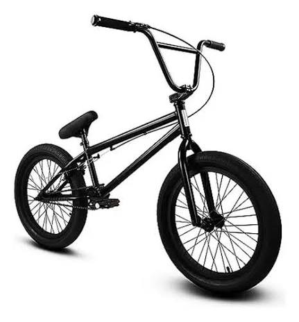
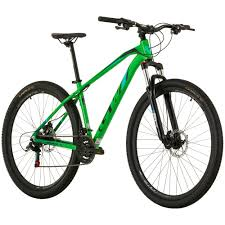

7:30 p. m. 2 horas
Centro histórico
Recorre las calles y los lugares emblemáticos de Medellín con un guía local.
Reservar esta rutaNuevo Jueves a sábado
Descubre Medellín en bici cuando se encienden las luces.
3
rutas guiadas
Desde
$55.000
Pedalea después del atardecer

7:30 p. m. 2 horas
Recorre las calles y los lugares emblemáticos de Medellín con un guía local.
Reservar esta ruta
8:00 p. m. 1,5 horas
Un paseo tranquilo por espacios verdes iluminados, ideal para compartir.
Reservar esta ruta
7:30 p. m. 3 horas
Sube a puntos panorámicos y descubre la ciudad iluminada desde arriba.
Reservar esta rutaUna noche, cuatro pasos
Encuentra el recorrido nocturno que mejor se adapta a tu plan.
Reserva tu lugar y coordina los detalles con nuestro equipo.
Te esperamos con tu bicicleta, casco y luces listos para rodar.
Disfruta Medellín iluminada en compañía de un guía local.
Tu próxima rodada empieza aquí